Na primární stavbě (tj. před případným sekundárním tloustnutím) těla vyšších rostlin se podílejí následující čtyři typy pletiv: pletiva meristematická, krycí, základní a vodivá. Všechny tyto čtyři typy pletiv se skládají z charakteristických typů buněk a obvykle plní více než jednu funkci. Tyto funkce přitom mají jednu společnou vlastnost: jsou evolučními adaptacemi na život mimo vodní prostředí, tedy na souši.
Krycí pletiva zabezpečují ochranu rostlin proti působení vnějších fyzikálních, chemických, ale i biotických vlivů, které by svým působením mohly rostlinu poškodit nebo i usmrtit. Za nejdůležitější funkci je možné označit ochrannou roli proti nadměrným ztrátám vody. U rostlin s primární anatomickou stavbou jsou nadzemní části těla rostlin chráněny primární pokožkou (epidermis), kořeny pak kryje kořenová epidermis neboli rhizodermis. Jejich roli po sekundárním ztloustnutí přebírá sekundární krycí pletivo – periderm.
Epidermis je zpravidla kompaktní, jednovrstevná, bez intercelulárních prostor. Epidermální buňky jsou typicky silně vakuolizované. V případě epidermis listů bývá jejich tvar většinou deskovitý, s četnými záhyby antiklinálních (k povrchu rostlinného orgánu kolmých) buněčných stěn. Z vnější strany má epidermis listů často silnou buněčnou stěnu a je kryta kutikulou, tvořenou kutiny a vosky a výraznou zejména u xerofytů. Vrstva kutikuly výrazně omezuje výpar vody z rostlinného organismu.
Vzhledem k faktu, že rostlina potřebuje z okolní atmosféry přijímat CO2 pro jeho fotosyntetickou fixaci, musel se u rostlin v průběhu fylogeneze vyvinout mechanismus zabezpečující z hlediska životních pochodů rostlin dva protichůdné požadavky – zabezpečit příjem CO2 a učinně regulovat výdej vody zejména v době jejího nedostatku v rostlinném organismu. Hlavní roli v regulaci výměny těchto plynných látek mezi rostlinou a okolní atmosférou hrají průduchy (stomata). Ty jsou tvořeny dvojící svěracích buněk typického ledvinovitého, popřípadě tyčinkovitého tvaru (šáchorovité - Cyperaceae, trávy - Gramineae). Svěrací buňky dle aktuálního stavu rostliny (saturace vodou, resp. vodní deficit...) a dle aktuálních ekologických podmínek (ozářenost, dostupnost vody, teplota...) zavírají či otevírají průduchovou štěrbinu. Někdy se v bezprostřední blízkosti svěracích buněk nachází ještě tzv. vedlejší buňky, morfologicky odlišné od ostatních epidermálních buněk, funkčně spjaté se svěracími buňkami průduchů.
Papily jsou jednoduché vychlípeniny vnější buněčné stěny epidermálních buněk, přítomné často např. na okvětních lístcích rostlin. Díky optickým jevům (rozptyl a lom světla) mají papilami pokryté části těla matný vzhled.
Výraznější modifikací epidermálních buněk jsou trichomy. Svojí funkcí zesilují ochranné vlastnosti krycího pletiva – snížením proudění vzduchu v bezprostřední blízkosti listu snižují ztráty vody odparem, zvýšením odrazivosti světla (albeda) snižují teplotu listu, produkcí specifických látek chrání rostliny před býložravci. Trichomy lze rozdělit do několika funkčních skupin:
Trichomy dále dělíme podle počtu buněk, které je tvoří (jedno nebo vícebuněčné), a podle tvaru (jednoduché nevětvené a větvené trichomy).
Pokožku kořenů nazýváme rhizodermis. Stejně jako v případě epidermis, i rhizodermis je obvykle jednovrstevná, pouze ve speciálním případě tzv. vzdušných kořenů, které nacházíme např. u epifytických orchidejí, je pokožka vícevrstevná a slouží k rychlému příjmu vody - označujeme ji jako velamen. Vychlípeniny rhizodermálních buněk nazývame kořenovými vlásky neboli rhiziny. Bývají až několik milimetrů dlouhé, u většiny druhů rostlin nevětvené. Výrazným způsobem rostlině usnadňují příjem vody a minerálních živin. Funkčně se jedná o absorpční trichomy.
List huseníčku namontujeme do vody a přímo pozorujeme. Alternativně si můžeme připravit otiskový preparát (mikroreliéfová metoda) – na list naneseme bezbarvý lak na nehty, necháme zaschnout a poté stáhneme pomocí kousku čiré izolepy, kterou spolu s otiskem přilepíme na podložní sklíčko a mikroskopujeme.
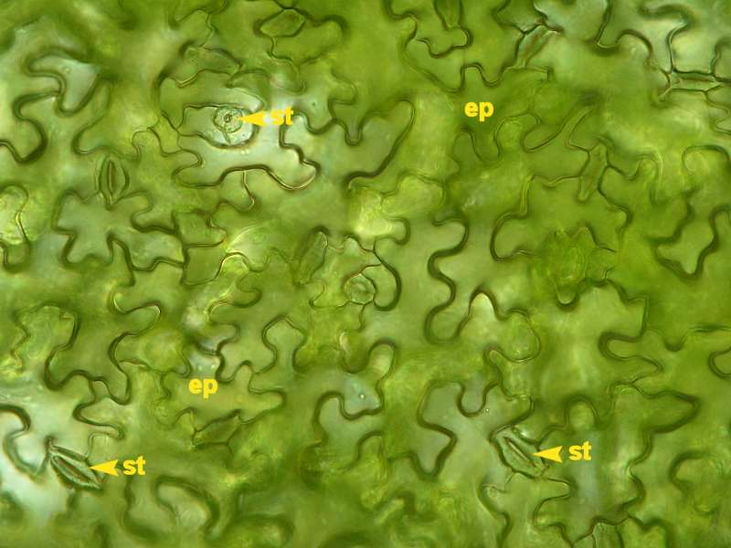
Přímé pozorování epidermálních buněk a průduchů na svrchní straně listu huseníčku rolního. Epidermální buňky mají laločnatý tvar, typický pro dvouděložné rostliny.
Příčné ruční žiletkové řezy listovou čepelí zelence namontujeme do vody a pozorujeme pomocí fluorescenčního mikoskopu. Ve svěracích buňkách průduchů můžeme pozorovat autofluoreskující chloroplasty.
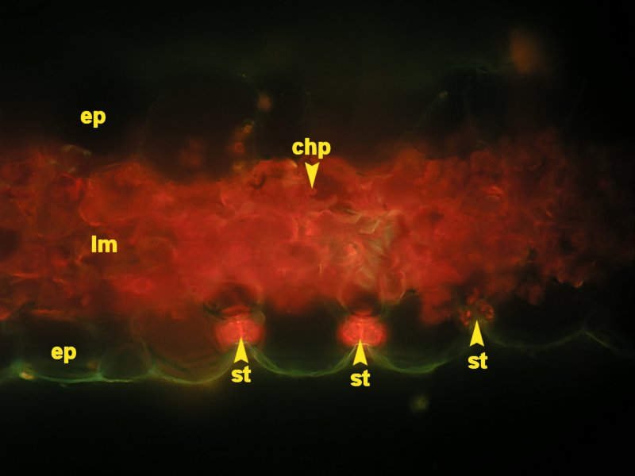
Díky využití autofluorescence chloroplastů můžeme snadno pozorovat, že epidermální buňky je na rozdíl od svěracích buněk průduchů neobsahují. Velmi výrazně naopak červeně fluoreskuje listový mezofyl, který má charakter chlorenchymu.
Papily můžeme pozorovat na korunních lístcích macešky (Viola x wittrockiana) - pozorujeme svrchní stranu lístků, které můžeme popřípadě přehnout rubovou stranou k sobě a papily tak pozorovat z boční strany, čímž vynikne jejich prostorové uspořádání.
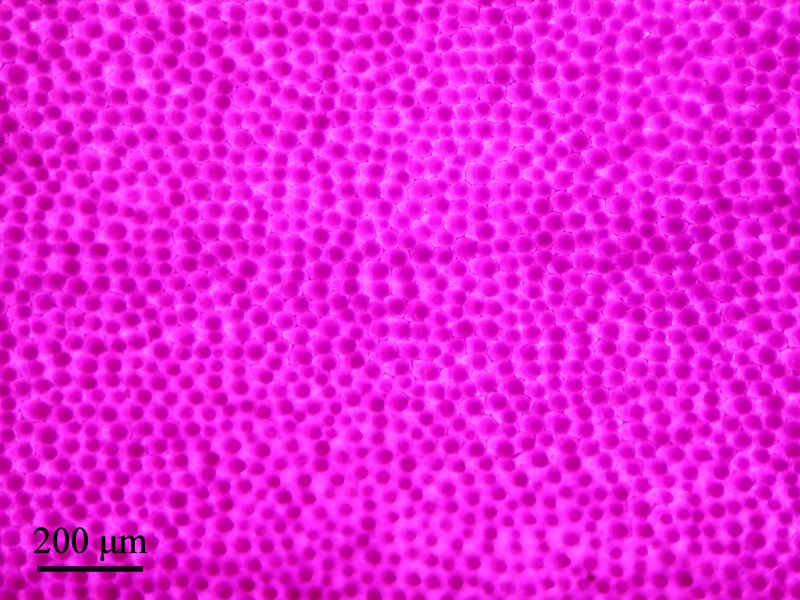
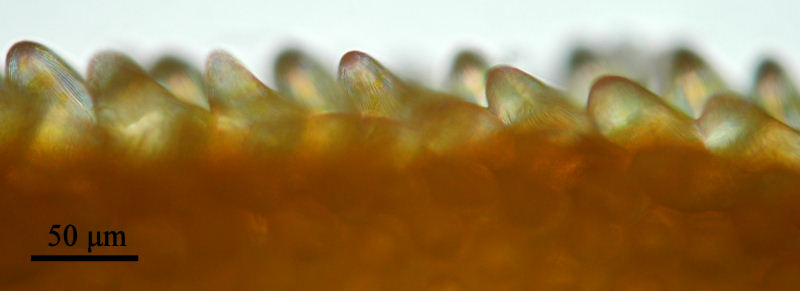
Krycí trichomy hlošiny úzkolisté (Elaeagnus angustifolius) a divizny (Verbascum sp.) můžeme pozorovat buď jednotlivě po jejich seškrábnutí na podložní sklíčko, případně můžeme pozorovat rozmístění trichomů na spodní straně listu zhotovením preparátu z části listu. Trichomy santpaulie (Santpaulia ionantha), pelargonie páskaté (Pelargonium zonale) a kopřivy dvoudomé (Urtica dioica) lze pozorovat nejlépe pomocí čerstvých preparátů zhotovených z kousků epidermis stažené z rostlinného těla pomocí žiletky, preparační jehly a pinzety.
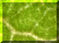
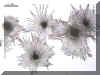
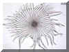
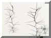
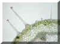
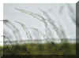
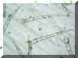
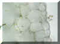
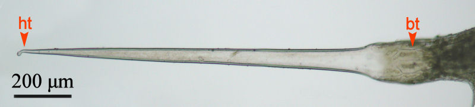
Ve vícebuněčné bázi trichomu je usazen velký jednobuněčný trichom. Buněčná stěna hrotu trichomu je inkrustována křemičitany a je velmi náchylná na mechanické poškození. Dojde-li ke kontaktu s živočichem, konec trichomu se snadno ulomí. Vzniká struktura podobná injekční jehle, která do poraněné pokožky uvolňuje látky způsobující lokální otoky a zarudnutí.
Kořenové vlásky můžeme snadno pozorovat makroskopicky nebo s použitím binokulárního mikroskopu na předklíčených rostlinách kukuřice seté (Zea mays), popřípadě na jiných rostlinných druzích.
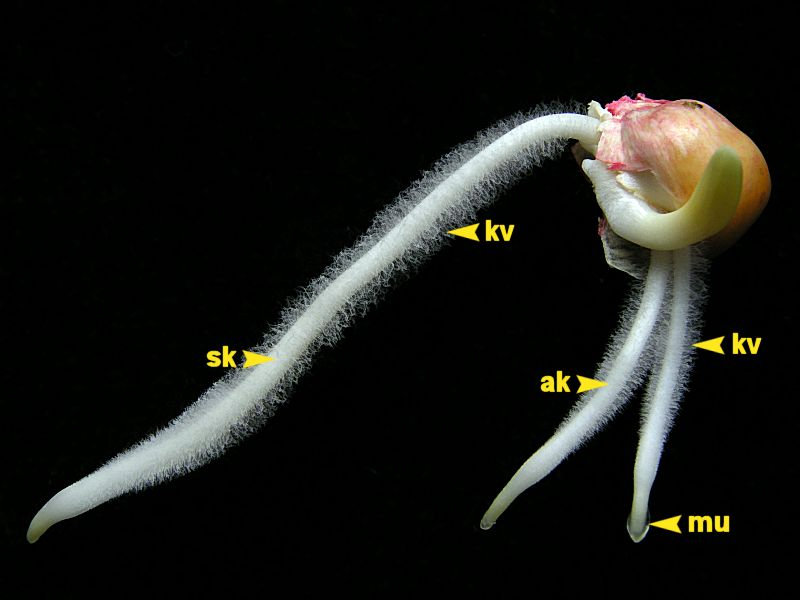
Na seminálním a adventivních kořenech v Petriho misce na vlhkém filtračním papíru předklíčené rostliny kukuřice lze vidět rozvinuté kořenové vlášení, kvořené jednotlivými absorpčními trichomy - kořenovými vlásky. Ty se podstatnou měrou uplatňují při získávání vody a minerálních živin z většího objemu půdy. Apikální část kořene produkuje mucigel - slizovitou zvlhčující látku, usnadňující pronikání kořene půdou.
Na stavbě primárního těla cévnatých rostlin se podílejí zejména tyto čtyři typy pletiv: pletiva meristematická, krycí, základní a vodivá. Všechny tyto čtyři typy pletiv se skládají z charakteristických typů buněk a obvykle plní více než jednu funkci. Tyto funkce přitom většinou mají jednu společnou vlastnost: jsou evolučními adaptacemi na život mimo vodní prostředí, tedy na souši.
Základní pletiva se diferencují ze základního meristému a vytváří většinu primárního těla vyšších rostlin. Například primární kůra kořenů nebo dřeň stonků či listový mezofyl jsou tvořeny téměř výhradně základními pletivy. Základní pletiva jsou na povrchu kryta pletivy krycími a uzavírají pletiva vodivá. Mají několik základních funkcí, např. v nich probíhá značná část metabolických reakcí, mají zásobní funkci a poskytují též mechanickou podporu (díky turgoru, popř. ztloustnutí buněčných stěn). Základní pletiva jsou tvořena třemi typy buněk – buňkami parenchymatickými, kolenchymatickými a sklerenchymatickými. Tyto buňky, pokud jsou odvozeny ze základního meristému a sousedí spolu ve velkém počtu pak skládají jednotlivé podtypy základních pletiv – pletiva parenchymatická, kolenchymatická či sklerenchymatická. Pletiva kolenchymatická a sklerenchymatická často označujeme souhrnně jako pletiva mechanická, neboť jejich hlavní funkcí je mechanická výztuha rostlinných orgánů.
Pozor – neplatí tedy, že výskyt daného typu buněk (např. parenchymatických) i ve velkém množství definuje název pletiva. Např. parenchymatické buňky se standardně nacházejí v primárních i sekundárních vodivých pletivech (produkty prokambia, resp. kambia) či ve felodermě (produkt felogénu).
Parenchymatické buňky jsou nejrozšířenější a nejuniverzálnější buňky rostlinného organismu v primární anatomické stavbě. Mají pouze málo význačných charakteristik – typické parenchymatické buňky jsou i v dospělosti živé, mají obvykle přibližně izodiametrický tvar (tj. ve všech směrech mají stejný rozměr), tenkou primární buněčnou stěnu a velké vakuoly. V praxi jsou za parenchymatické označovány všechny buňky, které nelze zařadit do jiné strukturní nebo funkční skupiny.
Parenchymatické buňky mají dvě významné funkce z hlediska fungování rostlinného organismu:
Parenchymatické buňky se diferencují z buněk produkovaných všemi meristémy v celém rostlinném těle. Mezi jejich význačné vlastnosti patří jejich schopnost dediferenciace a následné diferenciace v jiný buněčný typ, např. se změnou okolních podmínek, v nichž rostlina roste.
V rámci parenchymu se odlišují další podtypy tohoto základního pletiva: chlorenchym, aerenchym a transferové buňky. Typickým znakem chlorenchymatických buněk je přítomnost chloroplastů, jedná se tedy o pletivo specializované k fotosyntéze. Aerenchym je charakterizován velkým podílem mezibuněčných prostor v celkovém objemu pletiva. Díky tomu má schopnost zvýšené výměny plynů a vskutku se vyskytuje převážně blízko nebo přímo v metabolicky aktivních oblastech základního pletiva. V závislosti na stavbě rostlinného orgánu však může aerenchymatické pletivo plnit rovněž mechanickou funkci při současné minimalizaci metabolických nároků - např. ve dřeni ve stoncích sítiny (Juncus sp.). Transferové buňky jsou specializované na přenosy látek na krátké vzdálenosti a liší se stavbou buněčné stěny. Ta je vysoce členěná, nelignifikovaná, s četnými vchlípeninami zvyšujícími až dvacetkrát plochu plazmalemy. Tímto mechanismem se zvyšují, při předpokládaném zachování počtu membránových přenašečů na jednotku plochy plazmalemy, schopnosti aktivního transportu buňky. Tento podtyp parenchymu se vyskytuje např. podél vodivých elementů v xylému a floému (tedy podél vodivých pletiv), ale i v sekrečních žlázách nebo nektáriích.
Kolenchymatické buňky jsou podlouhlé buňky (dosahují délky až 2 mm) s nerovnoměrně ztloustlými primárními buněčnými stěnami. Jejich hlavní funkcí je mechanická podpora aktivně rostoucích nadzemních částí a běžně je nacházíme ve vyvíjejících se listech, řapících listů či ve stoncích. Protože buněčné stěny kolenchymu nejsou lignifikované, jsou schopny se protáhnout tak jak se prodlužují okolní buňky a rostlina roste.
Kolenchymatické buňky se diferencují z buněk parenchymatických a i v dospělosti jsou živé. Nejčastěji vytvářejí provazce nebo prstenec těsně pod epidermis, což je z hlediska mechanického výhodnější, něž kdyby rostlinný orgán vyztužovaly v jeho středu. Diferenciace kolenchymatických buněk je navíc silně ovlivňována mechanickým stresem, kterému je daný rostlinný orgán vystaven – například účinky proudění vzduchu stimulují vývin kolenchymatických buněk v řapících listů.
Podle lokalizace ztloustnutí buněčných stěn (BS) rozlišujeme několik typů kolenchymu:
Sklerenchymatické buňky (z řeckého skleros - tvrdý) mají silné, sekundární, typicky lignifikované a tedy pevné a neroztažitelné buněčné stěny. Poskytují mechanickou podporu již nerostoucím rostlinným orgánům a po ukončení svého vývoje obvykle odumírají – vlastní strukturou poskytující rostlině mechanickou podporu jsou tedy pouze silné buněčné stěny. Obdobně jako kolenchymatické buňky, i buňky sklerenchymatické se diferencují z parenchymu.
Rozlišujeme dva typy sklerenchymatických buněk vytvářejících základní pletiva: sklereidy a fibrily (syn. vlákna). Sklereidy jsou relativně krátké buňky proměnlivého tvaru, vyskytující se ovšem většinou jednotlivě nebo pouze v malých skupinách. Nalezneme je ve všech částech rostlin. Jako příklad sklereid tvořících základní pletivo lze uvést prstenec brachysklereid ve vnitřním kortexu vzdušného kořene monstery nádherné (Monstera deliciosa). Fibrily se obvykle vyskytují ve skupinách, nacházíme je tedy jako svazky těchto buněk. Jednotlivé fibrilární buňky jsou tenké a velmi podlouhlé, s překrývajícími se konci. Lumen buněk je malý, silná sekundární buněčná stěna je zpravidla lignifikovaná.
Zhotovíme příčné ruční žiletkové řezy větévkou bezu černého (Sambucus nigra), stonkem sítiny sivé (Juncus inflexus) a šáchoru střídavolistého (Cyperus alternifolius), oddenkem puškvorce obecného (Acorus calamus), řapíkem listu begónie (Begonia heraclea), řepy (Beta vulgaris) a brukve (Brassica sp.) a stonkem pelargonie páskaté (Pelargonium zonale). V případě, že řezy obsahují vzduch (zejména v případě aerenchymatického pletiva), je možné jej odstranit sníženým tlakem pomocí vývěvy nebo vakuové pumpy. Výhodné pro pozorování aerenchymu jsou poněkud silnější řezy. Naproti tomu pozorování chlorenchymu vyžaduje řezy pokud možno co nejtenčí. V případě oddenku puškvorce je vhodné vymýt teplou vodou z pletiva škrobová zrna, která znesnadňují pozorování. Změnou nastavení kolektorové clony (větším přicloněním oproti teoretické optimální hodnotě) lze často docílit lepších výsledků při pozorování preparátů.
Ve stonku muškátu lze nalézt všechny tři typy základného pletiva. Jednovrstevný deskový kolenchym se vyskytuje těsně pod epidermis. K němu přiléhá parenchymatické pletivo s vysokým obsahem chloroplastů - chlorenchym. Najdeme zde rovněž prstenec sklerenchymatických buněk, na nějž opět navazuje parenchymatické pletivo - dřeň.
Chlorenchymatické pletivo na periferii stonku šáchoru je přerušováno po célém obvodu stonku pravidelně rozmístěnými provazci sklerenchymatických buněk. Rovněž na xylémovou část uzavřeného kolaterálního cévního svazku přiléhá oblast sklerenchymatických buněk. Průduchy v epidermis se nachází vždy naproti chlorenchymatickému pletivu.
Vodivá pletiva zabezpečují transport vodných roztoků organických a anorganických látek po celém rostlinném těle, často na poměrně velké vzdálenosti. Z hlediska evoluce rostlin byla diferenciace pravých vodivých pletiv jednou z nejdůležitějších evolučních novinek, které umožnily růst rostlin v suchozemském prostředí a něm dorůstat do velkých rozměrů. Přítomnost pravých vodivých pletiv je charakteristickým znakem skupiny vyšších rostlin označované jako Tracheophyta neboli cévnaté rostliny.
Vodivá pletiva dělíme do dvou základních částí, lišících se stavbou i funkcí. Xylémová část slouží k transportu vodného roztoku, tzv. xylémové štávy, po celém těle rostliny. Tento tok má výraznou akropetální polaritu - směřuje z hlavního místa příjmu vody a minerálních živin (z kořenů) do hlavních míst výdeje vody (nadzemní části rostliny, zejména listy) - nazýváme jej proto transpiračním proudem. Naproti tomu floemové části rozvádí zejména energeticky bohaté látky (sacharidy) syntetizované v procesu fotosyntézy po celém rostlinném organismu - floémový tok je tedy všesměrný.
Do souboru vodivých pletiv patří kromě specializovaných vodivých elementů (cévy a cévice xylému, sítkové buňky a sítkovice floému) i mechanické složky vodivých pletiv zabezpečující pevnost a rovněž parenchymatické buňky.
Vodivá pletiva rostlin s primární stavbou jsou produktem primárního meristému prokambia a vyskytují se v podobě samostatných, navzájem izolovaných cévních svazků. Pokud rostlina sekundárně tloustne, zakládá se v ní sekundární laterální meristém kambium. Výsledkem činnosti kambia po několika vegetačních sezónách je kompaktní válec sekundárního xylému a floému.
Podle vzájemné pozice xylému a floému rozlišujeme tři základní typy cévních svazků (CS): koncentrický, kolaterální a bikolaterální. Pro organizaci vodivých pletiv k kořenech se občas používá termín radiální cévní svazek (v tomto smyslu je pouze jeden v daném kořeni!), lépe je však použít opis radiální organizace vodivých pletiv.
Koncentrické CS považujeme za fylogeneticky nejpůvodnější typ CS. V takto organizovaném cévním svazku jeden typ vodivého pletiva obklopuje a uzavírá druhý typ vodivého pletiva. Nachází-li se ve středu koncentrického CS floém, označujeme jej jako lýkostředný (leptocentrický). Pokud je ve středu xylém, označujeme jej jako dřevostředný (hadrocentrický).
Kolaterální CS jsou typické pro nadzemní části vyšších rostlin. Oblasti xylému a floému v rámci jednoho kolaterálního cévního svazku spolu sousedí a mají i typické umístění - např. u stonku se nachází xylém směrem dovnitř k ose stonku (centripetálně), floém se nachází naopak směrem ven (centrifugálně).
Obdobně uspořádaný je bikolaterální CS, v nemž dva póly floému lemují ze dvou stran xylém. Elementy floému nejsou zcela rovnocenné, floém na vnější straně CS je zpravidla lépe vyvinut.
Radiální organizace vodivých pletiv se vyskytují v kořenech. Samostatné póly protoxylému a protofloému se v něm střídají po obvodu středního válce. Podle počtů těchto pólů rozlišujeme radiální organizaci monoarchní (po jednom pólu protoxylému a protofloému), diarchní (po dvou pólech), triarchní, tetrachní, pentarchní až polyarchní. V kořenech se nejdříve diferencované elementy xylému a floému (protoxylém a protofloém) nacházejí vždy z vnější strany pólů vodivého pletiva, takže metaxylém a metafloém se diferencují směrem dovnitř (centripetálně).
Zhotovíme příčné ruční žiletkové řezy oddenkem puškvorce (Acorus calamus), stonky šáchoru (Cyperus alternifolius), voděnky (Tradescantia sp.) a pelargonie páskaté (Pelargonium zonale) a listem tenury (Sanseviera zeylanica). V případě, že řezy obsahují vzduch (zejména v případě aerenchymatického pletiva puškvorce), je možné jej odstranit sníženým tlakem pomocí vývěvy nebo vakuové pumpy. Aerenchymatické pletivo puškvorce obsahuje velké množství škrobových zrn, které je možné odstranit promýváním řezů v teplé vodě po dobu několika minut až desítek minut. Pletiva s lignifikovanými buněčnými stěnami můžeme zvýraznit barvením florglucinolem.
Cévní svazky v primární kůře oddenku puškvorce (Acorus calamus) jsou kolaterální uzavřené (cévní svazek listové stopy - oddenek puškvorce je metamorfovaný stonek), zatímco ve středním válci jsou cévní svazky koncentrické, s floémem v centrální oblasti (lýkostředné - leptocentrické, amfivazální). Aerenchymatické pletivo primární kůry i středního válce obsahuje velké množství škrobových zrn. Polohu endodermis nelze na tomto preparátu přesně určit.
Cévní svazky ve středním válci oddenku puškvorce (Acorus calamus) jsou koncentrické, s floémem v centrální oblasti (lýkostředné - leptocentrické). Kolem floému se nachází cévy xylému. Aerenchymatické pletivo v okolí cévních svazků obsahuje velké množství škrobových zrn, které je vhodné při přípravě preparátu vymýt teplou vodou..
Polyarchní radiální cévní svazek v kořenech je typickým znakem jednoděložných rostlin, mezi něž monstera patří. Uprostřed středního válce se nachází sklerifikující dřeň, prstenec sklerenchymu je stejně jako parenchymatické pletivo ležící zevně od něj součástí primární kůry.
Polyarchní radiální cévní svazek v kořenech je typickým znakem jednoděložných rostlin, mezi něž monstera patří. Uprostřed středního válce se nachází sklerifikující dřeň, prstenec sklerenchymu je stejně jako parenchymatické pletivo ležící zevně od něj součástí primární kůry. Autofluorescence.